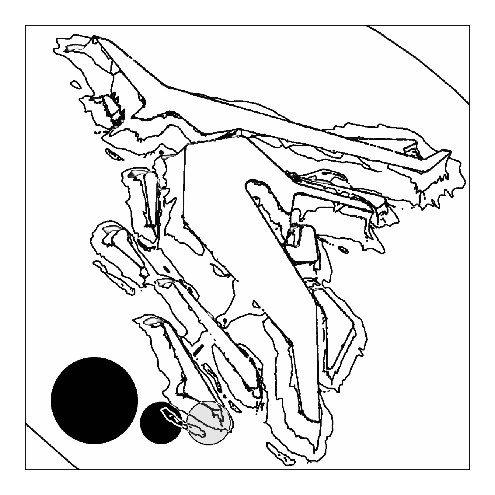
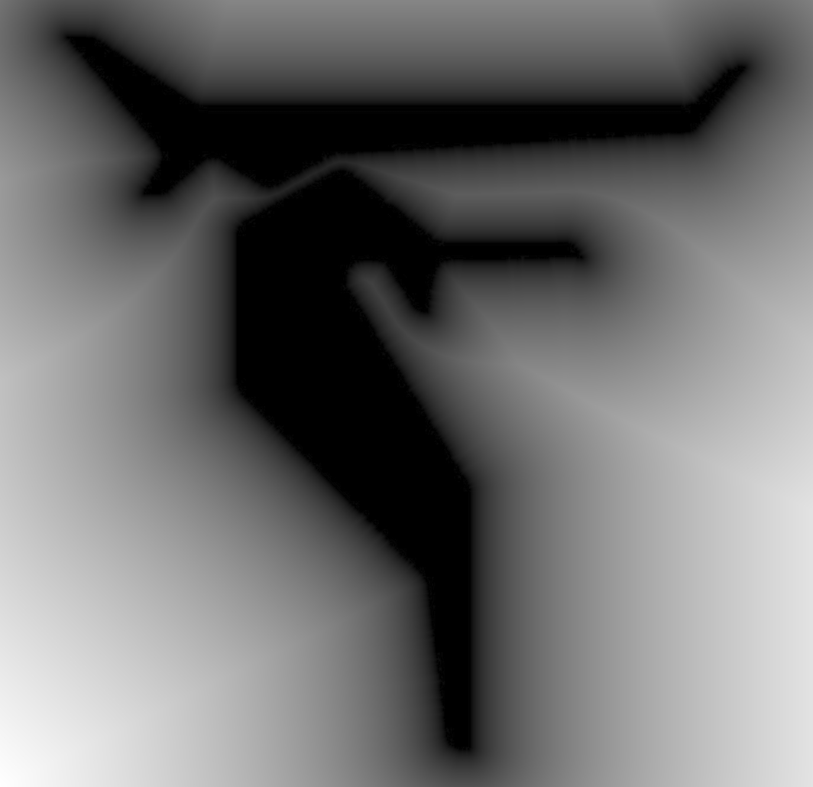
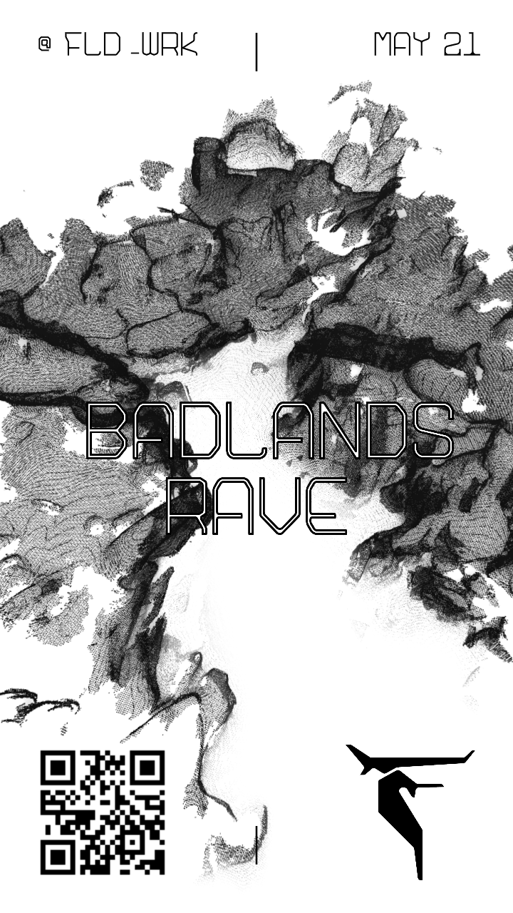

|
|
||
| RSVP @fld_wrk | e-mail {fldwrk@pm.me} instagram {@fld_wrk} * word-of-mouth {?} | |
| FLDWRK is :: found spaces - open movement - deconstructed - reworked - shared - scene - placemaker - platform - tool | WE are here to preserve DIY culture, resist power, protect place, broaden access, and increase freedom. |  |
| fieldwork is the collection of raw data outside a laboratory observe animals interacting with their environments interview or observe people in their natural environments to learn their languages, folklore, and social structures informal interviews, direct observation, participation in the life of the group, collective discussions, analyses of personal documents produced within the group, self-analysis, results from activities undertaken off- or on-line, and life-histories. | ability to see and visualize things that other individuals visiting the area of study may fail to notice. The more open researchers are to new ideas, concepts, and things which they may not have seen in their own culture, the better will be the absorption of those ideas. Better grasping of such material means a better understanding of the forces of culture operating in the area and the ways they modify the lives of the people under study. | |
| When humans themselves are the subject of study, protocols must be devised to reduce the risk of observer bias and the acquisition of too theoretical or idealized explanations of the workings of a culture. | ||
|  | ||
| Observable details | and more hidden details (like taboo behavior) are more easily observed and interpreted // can discover discrepancies between // (the formal system) and what actually does happen, or between different aspects of the formal system or between conscious representations and behavior. | |
| may include the undertaking of broad area surveys (including aerial surveys); of more localised site surveys (including photographic, drawn, and geophysical surveys, and exercises such as fieldwalking); and of excavation | studying of free-living wild animals in which the subjects are observed in their natural habitat, without changing, harming, or materially altering the setting or behavior of the animals under study. | |
|  | ||
| The objective of F13LD+W0RK is to get beneath the surface | ||